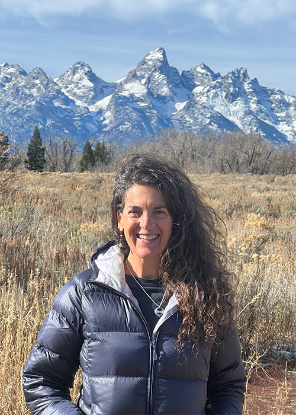

About
Originally from Upstate New York, Theresa moved to Northern California to attend Stanford University. After her graduation, she lived around the San Francisco/Monterey Bay area for many years and eventually settled in Santa Cruz where she raised her two sons. She is a public school teacher credentialed in both California and Wyoming. Her passion for Outdoor Education brought her to the University of Wyoming where she is working on a masters degree in Natural Science Education.
Experience
Theresa currently works as a private education consultant through her own agency, Circle of the Heart Education. As a consultant, she has worked with students from Grades 2 through 12, primarily supporting students in math, reading, and writing, as well as in other core subjects, Spanish, and college test preparation (PSAT, SAT, ACT, and AP/IB exams). She provides assessment, homework support, emotional support, remediation, support for special learning needs, and enrichment opportunities. With 15 years of tutoring experience and 11 years of classroom experience, Theresa is well-prepared, knowledgeable, and eager to continue guiding students to their best academic and holistic outcomes.
Contact
Please reach out by email atcircleofthehearteducation@gmail.com
for more information.
References available upon request.